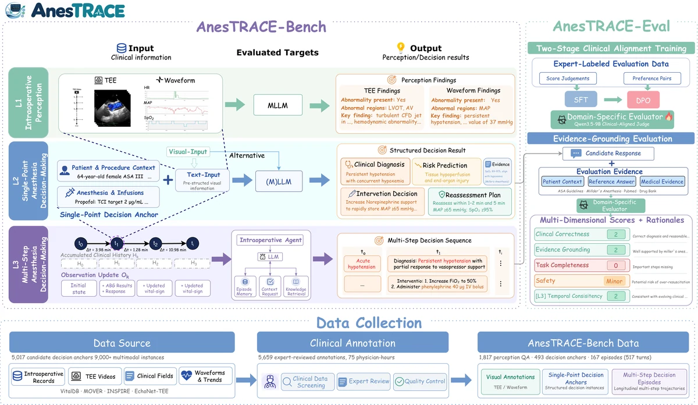

L1
术中感知
读懂可见证据
- 输入
- 经食管超声（TEE）图像 / 视频、生理波形或趋势图。
- 回答
- 识别、视觉定位、功能评估、数值提取与趋势 / 异常判断。
- 评价
- 按任务使用准确率、mIoU 或 F1 等指标。
从多模态感知到多步决策的术中麻醉基准评测
评估AI模型/智能体的术中感知、麻醉决策与持续更新能力
多模态感知 · 多步决策 · 麻醉医生对齐评价
评测任务
三个层级互为补充，输入表示、信息获取方式和时间范围不同。
L1
读懂可见证据
L2
单决策点诊断
L3
术中持续诊断

案例解析
供肾切除术中的三轮决策 · 模型：DeepSeek-V4-Pro（完整智能体框架配置）。
轨迹回放：后续患者状态与干预结果来自既有病例记录，模型建议不会改变后续患者状态。
MAP 67–69 mmHg · HR 49 bpm
模型判断为轻度低血压，建议谨慎补液、条件性使用血管活性药物，并先观察反应。
评价指出：未明确处理并存的心动过缓。临床正确性、证据依据和任务完整性均存在局部缺陷。
安全标签：safeMAP 101 mmHg
模型建议观察，并在 MAP 超过 105–110 mmHg 时恢复瑞芬太尼。
评价认为该干预阈值偏高，可能造成治疗延迟；诊断与干预的正确性、证据依据仍有局部缺陷。
安全标签：minor（轻微风险）MAP 78 mmHg · 呼气末二氧化碳（EtCO₂）趋势
模型建议继续观察，并在 EtCO₂ 持续升高时调整通气。
评价认可管理方案随血压恢复而更新，但指出诊断表述仍沿用“低血压”。
安全标签：safe该例的证据适应与管理连贯性均获 2/2 分，但 T1 仍有轻微安全风险。
safe 仅表示本评测未标记该回答存在安全风险，不代表回答完全正确或可直接用于临床。
关键发现
已报告的结果快照，不能单凭一个分数判断临床可用性。
GPT-6-Astra 的 TEE 视觉定位 mIoU，是表 3 中该列最高值。mIoU 衡量预测区域与标注区域的重叠程度，不是临床诊断准确率。
GPT-6-Astra 在 L3 的严重 / 危急安全错误率。分母仅包含有有效安全标签的干预回答；不是患者不良事件发生率。
同一模型的 L3 p95 延迟：约 95% 的有效计时决策轮次不超过该值。按轮累加模型请求与工具执行时间，不是整段临床片段耗时或真实手术室响应保证。
已发表结果
查看三个层级的评测结果，各层指标不直接比较。已发表结果包含历史 API 模型；新的官方评测提交需提供可在本地运行的模型权重。
可左右滚动查看全部指标；点击列标题排序。箭头表示当前排序方向。
如何评价开放式回答
AnesTRACE-Eval 结合病例事实与专家参考回答，并检索米勒麻醉学、ASA 指导、药理学参考资料及相关文献，辅助评价诊断与管理方案。决策时间点可用的病例证据是评价的首要依据。
供临床团队审查
判断研究价值时，同时审查病例来源、专家审核、评价器验证与尚未建立的证据。
数据来自 VitalDB、MOVER、INSPIRE 与 EchoNet-TEE。病例对齐、证据充分性、时间有效性及伪影筛查后再进行专家审核；被选择的回顾性病例不代表所有手术与高风险场景。
模型辅助生成候选材料，麻醉医生审核临床相关性、正确性、决策时证据、锚点有效性与证据充分性，并去除依赖未来信息的参考回答。
验证集含 100 条 L2 回答和来自 39 个临床片段的 117 条 L3 决策轮次回答。3 位麻醉医生分担标注。一致性以相关性衡量。
领域评价器以 Qwen3.5-9B 为基础，使用约 7,000 条专家审核 SFT 样本及 4,000 对专家排序 DPO 数据。训练病例与基准病例按设计重叠；验证所用的生成模型回答未进入训练。一致性结果不证明对未见临床病例的泛化。
可以定位模型在既定评测任务中的感知、回答质量、安全和决策更新缺陷。不能据此证明执行模型建议能改善患者结局，或证明其可安全部署到真实手术室。未覆盖场景、外部病例泛化与前瞻性工作流验证仍是研究边界。
引用
@misc{huang2026anestrace,
title={AnesTRACE: Benchmarking Intraoperative Anesthesia from Multimodal Perception to Multi-step Decision-Making},
author={Ziwei Huang and Qi Gao and Zhe Ji and Yuanyuan Yao and Fengjiang Zhang and Min Yan and Zhongle Xie and Gang Chen},
year={2026},
eprint={2609.32740},
archivePrefix={arXiv},
primaryClass={cs.CV},
url={https://arxiv.org/abs/2609.32740}
}